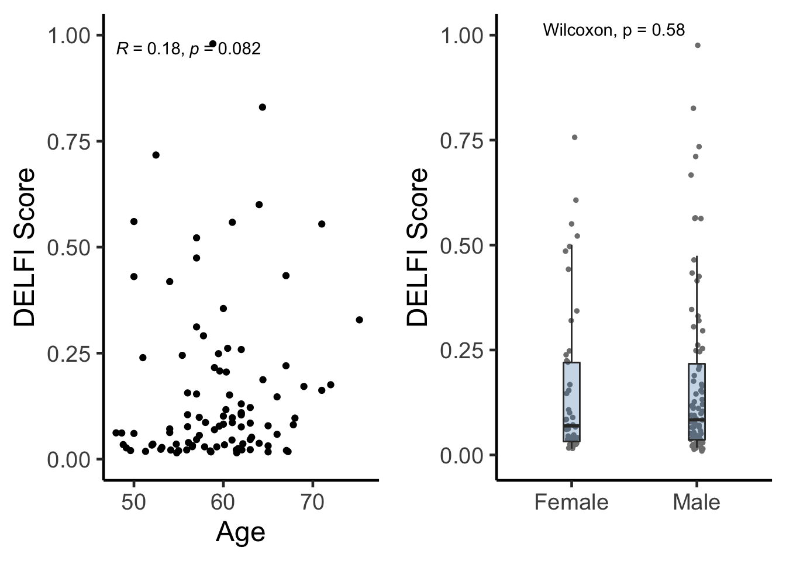
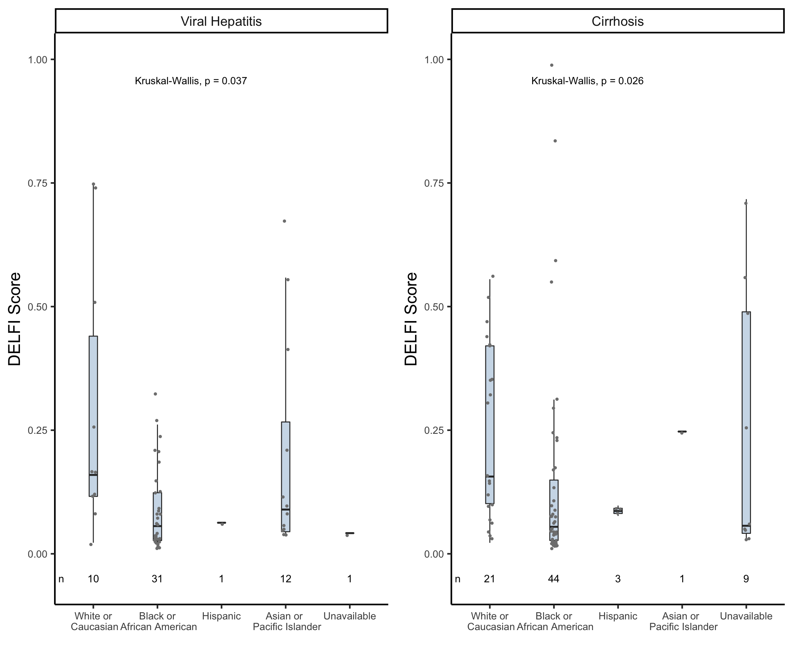
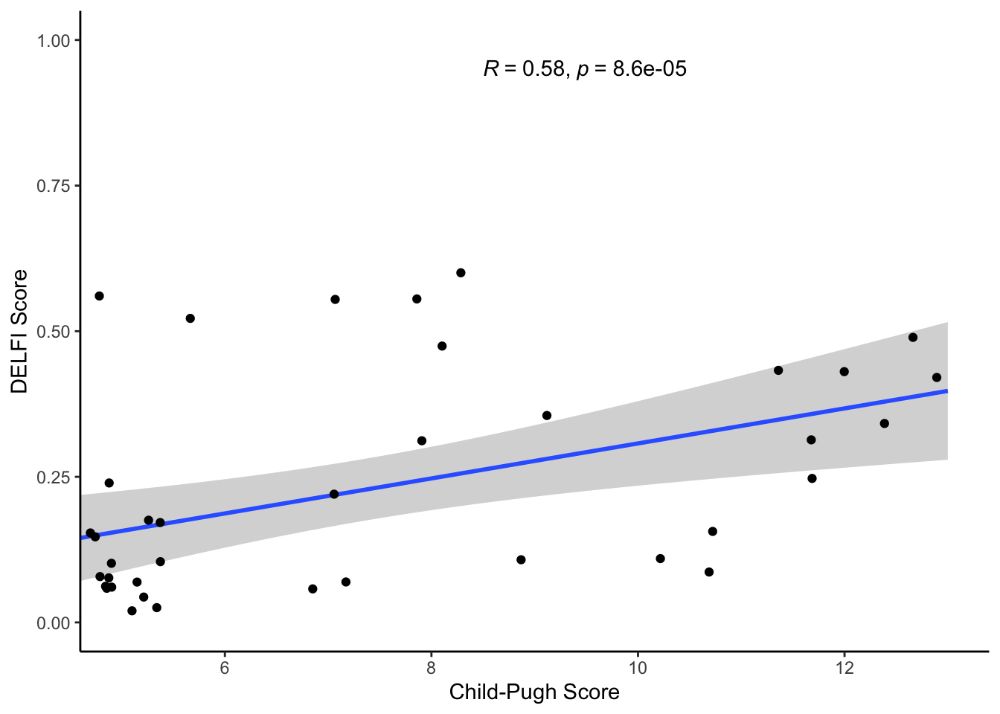
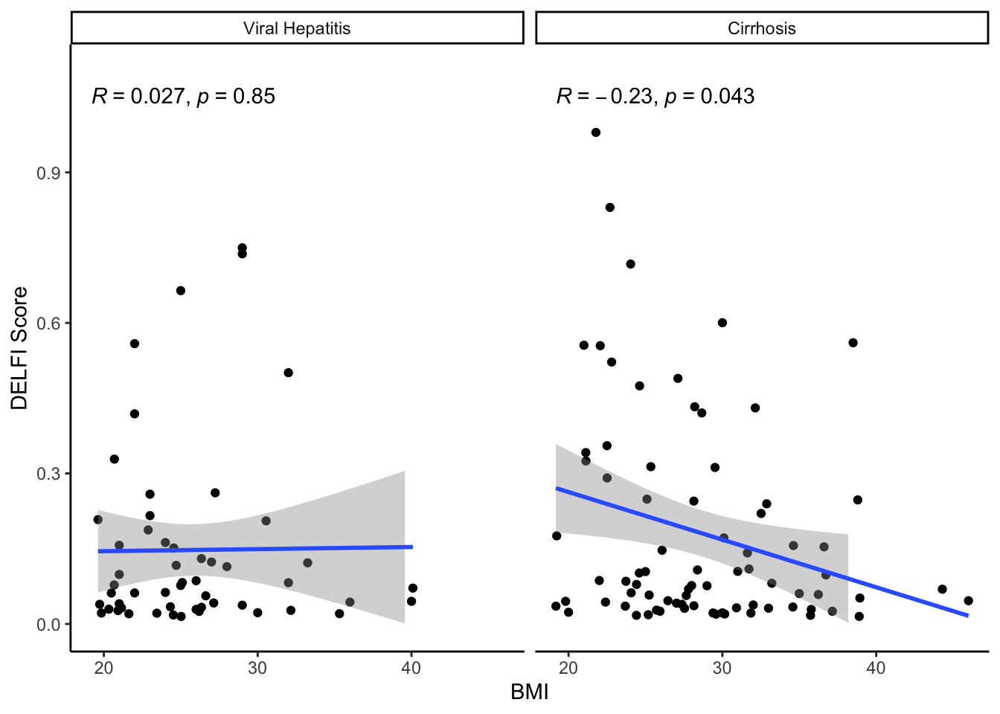
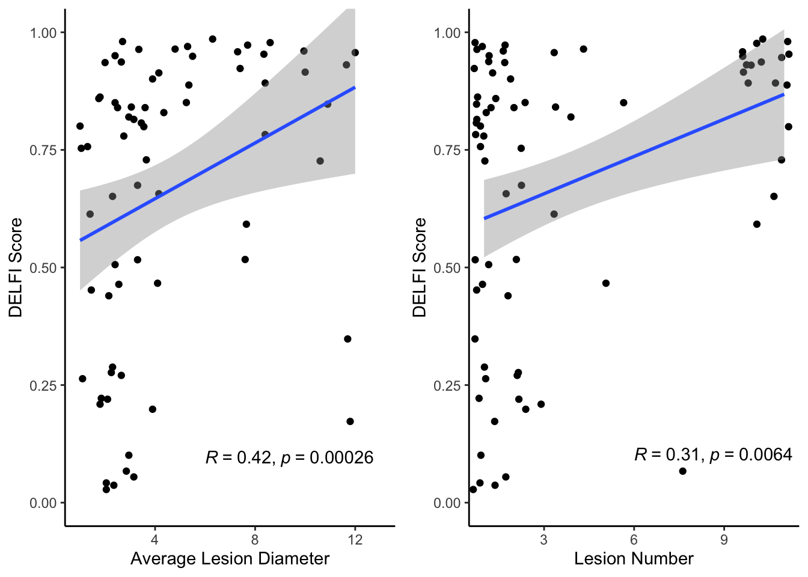
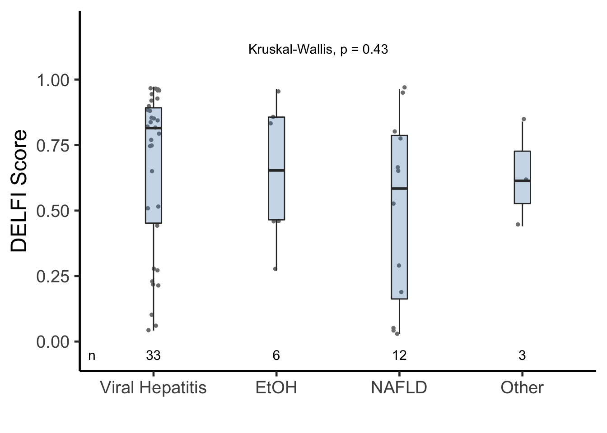
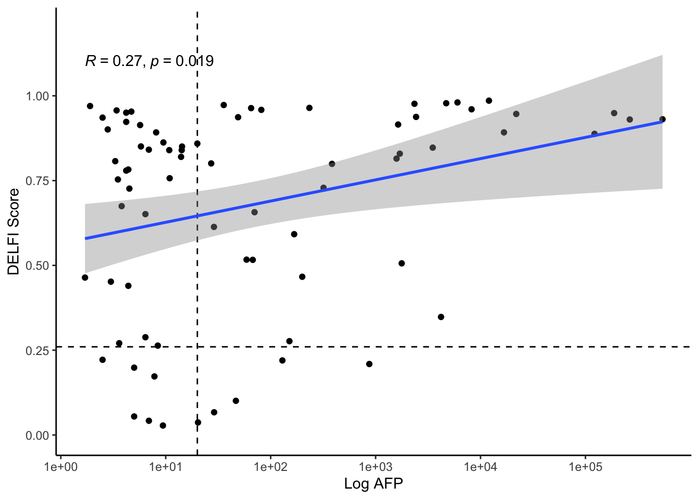
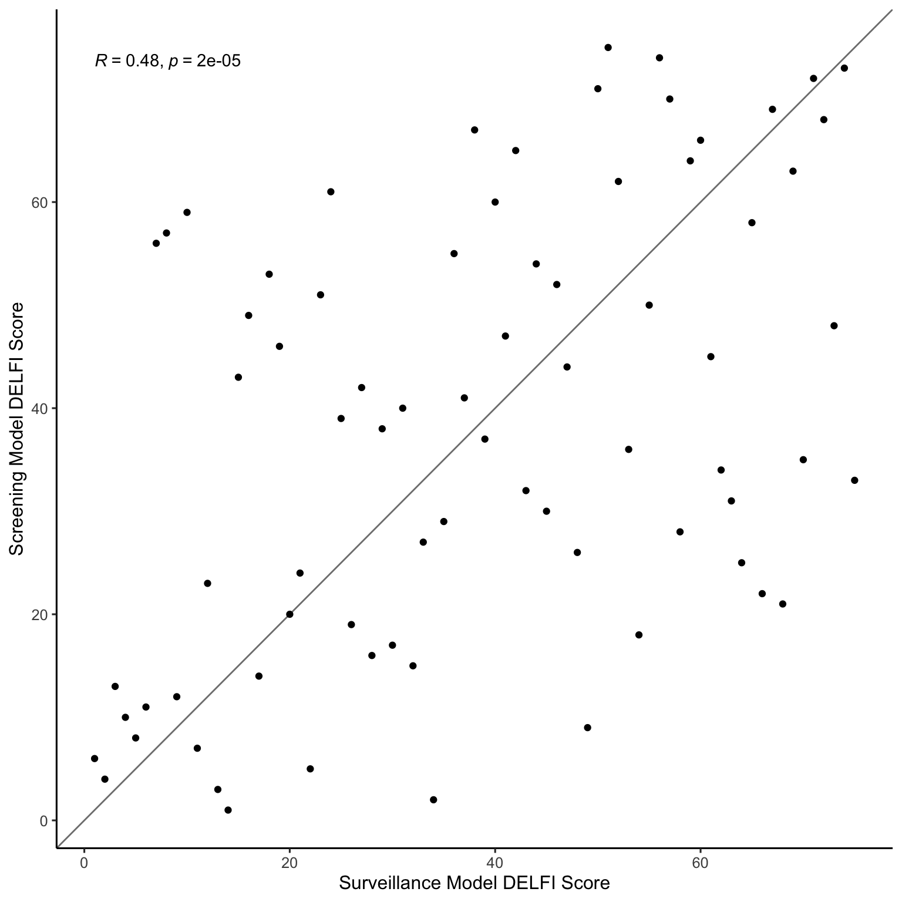

Last updated: 2022-11-17
Checks: 6 1
Knit directory: foda2022/
This reproducible R Markdown analysis was created with workflowr (version 1.6.2). The Checks tab describes the reproducibility checks that were applied when the results were created. The Past versions tab lists the development history.
The R Markdown is untracked by Git. To know which version of the R
Markdown file created these results, you’ll want to first commit it to
the Git repo. If you’re still working on the analysis, you can ignore
this warning. When you’re finished, you can run
wflow_publish to commit the R Markdown file and build the
HTML.
Great job! The global environment was empty. Objects defined in the global environment can affect the analysis in your R Markdown file in unknown ways. For reproduciblity it’s best to always run the code in an empty environment.
The command set.seed(20221117) was run prior to running
the code in the R Markdown file. Setting a seed ensures that any results
that rely on randomness, e.g. subsampling or permutations, are
reproducible.
Great job! Recording the operating system, R version, and package versions is critical for reproducibility.
Nice! There were no cached chunks for this analysis, so you can be confident that you successfully produced the results during this run.
Great job! Using relative paths to the files within your workflowr project makes it easier to run your code on other machines.
Great! You are using Git for version control. Tracking code development and connecting the code version to the results is critical for reproducibility.
The results in this page were generated with repository version 94de5f7. See the Past versions tab to see a history of the changes made to the R Markdown and HTML files.
Note that you need to be careful to ensure that all relevant files for
the analysis have been committed to Git prior to generating the results
(you can use wflow_publish or
wflow_git_commit). workflowr only checks the R Markdown
file, but you know if there are other scripts or data files that it
depends on. Below is the status of the Git repository when the results
were generated:
Ignored files:
Ignored: code/.DS_Store
Ignored: data/.DS_Store
Ignored: output/.DS_Store
Untracked files:
Untracked: LICENSE
Untracked: analysis/1a.Rmd
Untracked: analysis/1bc.Rmd
Untracked: analysis/3a.Rmd
Untracked: analysis/3b_c.Rmd
Untracked: analysis/4a.Rmd
Untracked: analysis/4b_c.Rmd
Untracked: analysis/4d.Rmd
Untracked: analysis/Clinical_Supplement.Rmd
Untracked: analysis/Fig2AB.Rmd
Untracked: analysis/Fig2C.Rmd
Untracked: analysis/Fig2DE.Rmd
Untracked: analysis/Rob_AFP.Rmd
Untracked: analysis/S1.Rmd
Untracked: analysis/S10_11.Rmd
Untracked: analysis/S6.Rmd
Untracked: analysis/Text_Numbers_Submitted.Rmd
Untracked: analysis/figS12.Rmd
Untracked: code/Cirr_score.Rmd
Untracked: code/Cirr_score_aa.Rmd
Untracked: code/Model_Lo_Val.Rmd
Untracked: code/SensSpec.Rmd
Untracked: code/TF.rmd
Untracked: code/feature_importance.Rmd
Untracked: code/feature_importanceTF.Rmd
Untracked: code/gsearesuball.Rmd
Untracked: code/gsearesubatrisk.Rmd
Untracked: code/hilistallcohort.txt
Untracked: code/liver.tools/
Untracked: code/plot-roc.r
Untracked: code/prepare_tcga_plot_data.r
Untracked: code/sumcomb.Rmd
Untracked: code/supplementalgsearesub.Rmd
Untracked: code/tfbs_coverage-v1-01val.R
Untracked: code/tfbsmakerhigh.sh
Untracked: code/tfbsmakerlowwo.sh
Untracked: code/tfhilistall.txt
Untracked: code/tfhilistatrisk.txt
Untracked: code/tflowlistall.txt
Untracked: code/tflowlistatrisk.txt
Untracked: data/Alltissuetyperesuball.rds
Untracked: data/Alltissuetyperesubatrisk.rds
Untracked: data/Clinical_Metadata_spreadsheet_8_11.csv
Untracked: data/Clinical_Metadata_spreadsheet_8_11.xlsx
Untracked: data/LUCAS_metadata.xlsx
Untracked: data/TCGA/
Untracked: data/TF_names_ref.csv
Untracked: data/arm_heights.rds
Untracked: data/cohort_rel_cov2.txt
Untracked: data/delfi_features.csv
Untracked: data/high_mean
Untracked: data/lengthnameTF.rds
Untracked: data/liverlengthandorderall.rds
Untracked: data/liverlengthandorderatrisk.rds
Untracked: data/long_bins.csv
Untracked: data/long_bins_val.csv
Untracked: data/low_mean
Untracked: data/lunglengthandorder.rds
Untracked: data/lungn
Untracked: data/processed.rds
Untracked: data/sample_annotation_heatmap.csv
Untracked: data/simulation.xls
Untracked: data/simulation_new_aa.xls
Untracked: data/two_test_plan/
Untracked: data/val_preds.csv
Untracked: data/validation_features.csv
Untracked: data/validation_meta.csv
Untracked: data/validation_rel_cov.txt
Untracked: output/feature_importance.Rmd/
Untracked: output/feature_importance_TF.Rmd/
Untracked: output/word_docs/
Unstaged changes:
Modified: README.md
Modified: analysis/about.Rmd
Modified: analysis/index.Rmd
Modified: analysis/license.Rmd
Modified: code/README.md
Modified: data/README.md
Modified: output/README.md
Note that any generated files, e.g. HTML, png, CSS, etc., are not included in this status report because it is ok for generated content to have uncommitted changes.
There are no past versions. Publish this analysis with
wflow_publish() to start tracking its development.
Import all data and format metadata
clinical<-read_csv(here("data","Clinical_Metadata_spreadsheet_8_11.csv"))New names:
* ...2 -> ...3
* Personnel...23 -> Personnel...27
* Personnel...30 -> Personnel...34Rows: 555 Columns: 70── Column specification ────────────────────────────────────────────────────────
Delimiter: ","
chr (43): id, ...3, DateTransferred, HCCStatus, Cirrhosisstatus, Disease, Co...
dbl (27): score.delfi, forveryclean, Plas2avolu2e, Sex, Age, AFP, cfdnaextra...
ℹ Use `spec()` to retrieve the full column specification for this data.
ℹ Specify the column types or set `show_col_types = FALSE` to quiet this message.delfi<-read_csv(here("data","two_test_plan","delfi-results_risk.csv"))New names:
* `` -> ...1Rows: 208 Columns: 11── Column specification ────────────────────────────────────────────────────────
Delimiter: ","
chr (6): id, type, BCLC, Disease, grp_id, cat
dbl (5): ...1, score.delfi.lr, Draw_number, Treatment before blood draw, sco...
ℹ Use `spec()` to retrieve the full column specification for this data.
ℹ Specify the column types or set `show_col_types = FALSE` to quiet this message.data<-inner_join(delfi %>% select(id,score.delfi.gbm),clinical %>% select(-score.delfi),by=c("id"="id"))
#write_csv(data,"Clinical_DELFI.csv")
data<-data %>% filter(forveryclean==1)
data<-data %>% mutate(group=ifelse(Disease=="HCC",data$BCLC,data$Disease))
data<-data %>% mutate(group=if_else(Disease=="HCV"&Cirrhosisstatus=="yes","Cirrhosis",group))
data<-data %>% mutate(group=if_else(Disease=="HBV","Viral Hepatitis",group))
data<-data %>% mutate(group=if_else(Disease=="HCV"&Cirrhosisstatus=="no","Viral Hepatitis",group))
data<-data %>% mutate(group=if_else(Disease=="HCV"&Cirrhosisstatus=="No","Viral Hepatitis",group))
data<-data %>% mutate(sex_cat=ifelse(Sex==1,"Female","Male"))
HCC<-data %>% filter(Disease=="HCC")
HCC$group="All HCC"
data<-rbind(data,HCC)
data <- data %>% mutate(group=ifelse(group=="0","0/A",data$group))
data <- data %>% mutate(group=ifelse(group=="A","0/A",data$group))
data$group<-factor(data$group,levels=c("Non-cancer","Viral Hepatitis","Cirrhosis","All HCC","0/A","B","C"))
data$log_delfi<-log10(data$score.delfi.gbm/(1-data$score.delfi.gbm))
data<-data %>% mutate(log_delfi=ifelse(is.infinite(log_delfi),7.5,log_delfi))
data<-data %>% filter(Disease != "HCC")Age/Sex S2
library(ggpubr)
#pdf("../Figures/Victor_4_22/Age.pdf",height=5,width=5)
a<-ggplot(data %>% filter(HCCStatus == "No"),aes(x=Age,y=score.delfi.gbm)) +xlim(c(48,76))+ylim(c(0,1))+ stat_cor(method="spearman")+theme_classic(base_size=18)+geom_jitter()+ylab("DELFI Score")
#dev.off()
#pdf("../Figures/Victor_4_22/Sex.pdf",height=5,width=5)
s<-ggplot(data %>% filter(HCCStatus == "No"),aes(x=sex_cat,y=score.delfi.gbm))+ stat_compare_means(method="wilcox.test")+
geom_jitter(size=1, width=0.05, height=0.01, color="gray50") +
geom_boxplot(fill="steelblue", outlier.shape = NA,
width=0.13, alpha=0.3) +
#scale_x_discrete(labels=n.disease$label) +
ylab("DELFI Score") +
theme_classic(base_size=18) + ##figure out how to
theme(panel.grid=element_blank()) +
xlab("")+ylim(c(-.01,1))
#dev.off()
#pdf("../../Figures/S1ab.pdf",height=5,width=10)
cowplot::plot_grid(a,s,align=c("h"))Warning: Removed 34 rows containing non-finite values (stat_cor).Warning: Removed 36 rows containing missing values (geom_point).
#dev.off()Race/Ethnicity S3
data<-data %>% mutate(race_curated=if_else(`Race/Ethinicity` %in% c("African American","Black or African American"),"Black or African American",`Race/Ethinicity`))
data<-data %>% mutate(race_curated=if_else(race_curated %in% c("Mixed Race,Hispanic","White or Caucasian,Hispanic","Unknown,Hispanic"),"Hispanic",race_curated))
data<-data %>% mutate(race_curated=if_else(race_curated %in% c("Asian","Asian,Pacific Islander","Chinese","Unknown,Pacific Islander"),"Asian or Pacific Islander",race_curated))
data<-data %>% mutate(race_curated=if_else(race_curated %in% c("Unknown","Other","Declined to Answer"),"Unavailable",race_curated))
#data<-data %>% filter(race_curated != "Unavailable")
data %>% group_by(group,Disease,Cirrhosisstatus,race_curated) %>% summarize(n())`summarise()` has grouped output by 'group', 'Disease', 'Cirrhosisstatus'. You can override using the `.groups` argument.# A tibble: 13 × 5
# Groups: group, Disease, Cirrhosisstatus [4]
group Disease Cirrhosisstatus race_curated `n()`
<fct> <chr> <chr> <chr> <int>
1 Viral Hepatitis HBV no Asian or Pacific Islander 12
2 Viral Hepatitis HBV no Black or African American 3
3 Viral Hepatitis HBV no Hispanic 1
4 Viral Hepatitis HBV no White or Caucasian 10
5 Viral Hepatitis HCV No Black or African American 28
6 Viral Hepatitis HCV No Unavailable 1
7 Cirrhosis Cirrhosis yes Asian or Pacific Islander 1
8 Cirrhosis Cirrhosis yes Black or African American 21
9 Cirrhosis Cirrhosis yes Hispanic 3
10 Cirrhosis Cirrhosis yes Unavailable 3
11 Cirrhosis Cirrhosis yes White or Caucasian 21
12 Cirrhosis HCV yes Black or African American 23
13 Cirrhosis HCV yes Unavailable 6data$race_curated<-factor(data$race_curated,levels=c("White or Caucasian","Black or African American","Hispanic","Asian or Pacific Islander","Unavailable"))
N <- data %>% filter(group == "Viral Hepatitis") %>%
group_by(race_curated) %>%
summarize(n=length(unique(id)),
groups=unique(`race_curated`),
.groups="drop") %>%
mutate(score.delfi=-0.05)
N$groups<-factor(N$groups,levels=unique(data$race_curated))
Nlabel <- tibble(groups=levels(N$groups)[1]) %>%
mutate(groups=factor(groups, levels(N$groups)),
label="n", score.delfi=-0.05,
category=levels(N$groups)[1],
category=factor(category, levels(N$groups)))
#pdf("../Ethnicity_Combined_NCOnly.pdf",height=5,width=10)
h<-ggplot(data %>% filter(group == "Viral Hepatitis"),aes(x=race_curated,y=score.delfi.gbm)) + geom_boxplot(fill="steelblue", outlier.shape = NA,width=0.13, alpha=0.3) + geom_jitter(size=1, width=0.05, height=0.01, color="gray50") + stat_compare_means(label.y = .95,label.x=2,method="kruskal.test") +
#scale_x_discrete(labels=n.disease$label) +
ylab("DELFI Score") +
theme_classic(base_size=18) + ##figure out how to
theme(panel.grid=element_blank(),axis.text = element_text(size = 11)) +
xlab("")+ ylim(c(-.05,1))+facet_wrap(vars(group))+
scale_x_discrete(labels=c("White or\n Caucasian","Black or\n African American","Hispanic","Asian or \n Pacific Islander","Unavailable"))+
geom_text(data=N, aes(label=n,y=score.delfi), size=4, position=position_dodge(0.5))+coord_cartesian(clip = "off")+
geom_text(data=Nlabel, aes(x=0.5, y=score.delfi,label="n"), size=4)
N <- data %>% filter(group == "Cirrhosis") %>%
group_by(race_curated) %>%
summarize(n=length(unique(id)),
groups=unique(`race_curated`),
.groups="drop") %>%
mutate(score.delfi=-0.05)
N$groups<-factor(N$groups,levels=unique(data$race_curated))
Nlabel <- tibble(groups=levels(N$groups)[1]) %>%
mutate(groups=factor(groups, levels(N$groups)),
label="n", score.delfi=-0.05,
category=levels(N$groups)[1],
category=factor(category, levels(N$groups)))
#pdf("../Ethnicity_Combined_NCOnly.pdf",height=5,width=10)
h1<-ggplot(data %>% filter(group == "Cirrhosis"),aes(x=race_curated,y=score.delfi.gbm)) + geom_boxplot(fill="steelblue", outlier.shape = NA,width=0.13, alpha=0.3) + geom_jitter(size=1, width=0.05, height=0.01, color="gray50") + stat_compare_means(label.y = .95,label.x=2,method="kruskal.test") +
#scale_x_discrete(labels=n.disease$label) +
ylab("DELFI Score") +
theme_classic(base_size=18) + ##figure out how to
theme(panel.grid=element_blank(),axis.text = element_text(size = 11)) +
xlab("")+ ylim(c(-.05,1))+facet_wrap(vars(group))+scale_x_discrete(labels=c("White or\n Caucasian","Black or\n African American","Hispanic","Asian or \n Pacific Islander","Unavailable"))+geom_text(data=N, aes(label=n,y=score.delfi), size=4, position=position_dodge(0.5))+coord_cartesian(clip = "off")+
geom_text(data=Nlabel, aes(x=0.5, y=score.delfi,label="n"), size=4)
library(cowplot)
Attaching package: 'cowplot'The following object is masked from 'package:ggpubr':
get_legendcowplot::plot_grid(h,h1,align=c("v"),axis=c("l"),nrow=1)
#dev.off()Child-Pugh S4
a<-data %>% filter(group=='Cirrhosis')
a$`Child-Pugh`<-as.numeric(a$`Child-Pugh`)Warning: NAs introduced by coercionggplot(a,aes(x=`Child-Pugh`,y=score.delfi.gbm)) +theme_classic()+xlab("Child-Pugh Score")+ylab("DELFI Score")+ stat_cor(method="spearman",label.x.npc=c("center"),label.y.npc=c("top"))+geom_smooth(method="lm")+coord_cartesian(ylim=c(0,1),xlim=c(5,13))+geom_jitter()Warning: Removed 38 rows containing non-finite values (stat_cor).`geom_smooth()` using formula 'y ~ x'Warning: Removed 38 rows containing non-finite values (stat_smooth).Warning: Removed 38 rows containing missing values (geom_point).
BMI S5
data$BMI<-as.numeric(data$BMI)Warning: NAs introduced by coercionggplot(data %>% filter(group %in% c("Viral Hepatitis","Cirrhosis")),aes(x=BMI,y=score.delfi.gbm)) + geom_point()+facet_wrap(vars(group),nrow=1)+ theme_classic()+xlab("BMI")+ylab("DELFI Score")+ stat_cor(method="spearman",label.y=1.05)+geom_smooth(method="lm")+ylim(c(0,1.1))Warning: Removed 2 rows containing non-finite values (stat_cor).`geom_smooth()` using formula 'y ~ x'Warning: Removed 2 rows containing non-finite values (stat_smooth).Warning: Removed 2 rows containing missing values (geom_point).
#dev.off()Lesion size and number S7
se<-read_csv(here("data","two_test_plan","delfi-results_risk.csv"))New names:
* `` -> ...1Rows: 208 Columns: 11── Column specification ────────────────────────────────────────────────────────
Delimiter: ","
chr (6): id, type, BCLC, Disease, grp_id, cat
dbl (5): ...1, score.delfi.lr, Draw_number, Treatment before blood draw, sco...
ℹ Use `spec()` to retrieve the full column specification for this data.
ℹ Specify the column types or set `show_col_types = FALSE` to quiet this message.clinical_meta<-read_csv(here("data","Clinical_Metadata_spreadsheet_8_11.csv"))New names:
* ...2 -> ...3
* Personnel...23 -> Personnel...27
* Personnel...30 -> Personnel...34Rows: 555 Columns: 70── Column specification ────────────────────────────────────────────────────────
Delimiter: ","
chr (43): id, ...3, DateTransferred, HCCStatus, Cirrhosisstatus, Disease, Co...
dbl (27): score.delfi, forveryclean, Plas2avolu2e, Sex, Age, AFP, cfdnaextra...
ℹ Use `spec()` to retrieve the full column specification for this data.
ℹ Specify the column types or set `show_col_types = FALSE` to quiet this message.clinical_meta<-clinical_meta %>% mutate(lesion_num=if_else(`Lesion #`<=1,'<=1',`Lesion #`))
clinical_meta<-clinical_meta %>% mutate(lesion_num=if_else(lesion_num=="2"|lesion_num=="3",'2-3',lesion_num))
clinical_meta<-clinical_meta %>% mutate(lesion_num=if_else(`Lesion #`>3,'>3',lesion_num))
clinical_meta<-clinical_meta %>% mutate(lesion_num=if_else(lesion_num=="10"|lesion_num=="inumerable"|lesion_num=="numerous"|lesion_num=="1 major and several satellite",'>3',lesion_num))
clinical_meta<-clinical_meta %>% mutate(`Lesion diameter1`=if_else(`Lesion diameter1`==">10","11",`Lesion diameter1`))
clinical_meta<-clinical_meta %>% mutate(lesion_size=if_else(`Lesion diameter1`>`Lesion diameter2`,clinical_meta$`Lesion diameter1`,clinical_meta$`Lesion diameter2`))
clinical_meta<-clinical_meta %>% mutate(lesion_size=if_else(lesion_size=="Expansively infiltrative","21.8",lesion_size))
clinical_meta$lesion_size<-as.double(clinical_meta$lesion_size)Warning: NAs introduced by coercionclinical_meta<-clinical_meta %>% mutate(lesion_size=if_else(lesion_size<2,0,lesion_size))
clinical_meta<-clinical_meta %>% mutate(lesion_size=if_else(lesion_size>=2 & lesion_size<=5 ,1,lesion_size))
clinical_meta<-clinical_meta %>% mutate(lesion_size=if_else(lesion_size>5 ,2,lesion_size))
clinical_meta<-clinical_meta %>% mutate(CGID=if_else(id=="CGLI55P","CGLI55P_1",id))
se<-left_join(se,clinical_meta %>% select(id,lesion_size,lesion_num,`Lesion #`,`Lesion diameter1`,`Lesion diameter2`,`Vascular Invasion`),by=c("id"="id"))
lesion<-se %>% filter(Disease=="HCC")
lesion<-lesion %>% mutate(lesion_size_real=if_else(lesion_size==0,"<2","nope"))
lesion<-lesion %>% mutate(lesion_size_real=if_else(lesion_size==1,"2-5",lesion_size_real))
lesion<-lesion %>% mutate(lesion_size_real=if_else(lesion_size==2,">5",lesion_size_real))
lesion<-lesion %>% mutate(lesion_number_full=if_else(`Lesion #`=="inumerable"|`Lesion #`=="numerous"|`Lesion #`=="1 major and several satellite"| `Lesion #`=="multiple","11",`Lesion #`)) #other max is 10
lesion<-lesion %>% mutate(diam1=if_else(`Lesion diameter1`=="expansively infiltrative","21.8",`Lesion diameter1`)) ##one more than largest number
lesion<-lesion %>% mutate(diam2=if_else(`Lesion diameter2`=="expansively infiltrative","21.8",`Lesion diameter2`)) ##one more than largest number
lesion<-lesion %>% mutate(diam1=if_else(`Lesion diameter1`==">10","11",diam1)) ##one more than largest number
lesion$diam_ave<-(as.numeric(lesion$diam1) + as.numeric(lesion$diam2))/2
lesion$lesion_number_full<-as.numeric(lesion$lesion_number_full)
d<-ggplot(lesion,aes(x=diam_ave,y=score.delfi.gbm))+geom_jitter()+theme_classic()+ylab('DELFI Score')+xlab('Average Lesion Diameter')+geom_smooth(method="lm")+stat_cor(method="spearman",label.x.npc=c("center"),label.y.npc=c("bottom"))+
coord_cartesian(ylim=c(0,1),xlim=c(1,13))+scale_x_continuous(breaks=seq(0,12,4), limits=c(0, 12))
n<-ggplot(lesion,aes(x=lesion_number_full,y=score.delfi.gbm))+geom_jitter()+theme_classic()+ylab('DELFI Score')+xlab('Lesion Number')+geom_smooth(method="lm")+stat_cor(method="spearman",label.x.npc=c("center"),label.y=.1)+ylim(c(0,1.5))+coord_cartesian(ylim=c(0,1),xlim=c(1,11))
cowplot::plot_grid(d,n,align=c("h"))`geom_smooth()` using formula 'y ~ x'Warning: Removed 5 rows containing non-finite values (stat_smooth).Warning: Removed 5 rows containing non-finite values (stat_cor).Warning: Removed 5 rows containing missing values (geom_point).`geom_smooth()` using formula 'y ~ x'
DDX S8
clinical<-read_csv(here("data","Clinical_Metadata_spreadsheet_8_11.csv"))New names:
* ...2 -> ...3
* Personnel...23 -> Personnel...27
* Personnel...30 -> Personnel...34Rows: 555 Columns: 70── Column specification ────────────────────────────────────────────────────────
Delimiter: ","
chr (43): id, ...3, DateTransferred, HCCStatus, Cirrhosisstatus, Disease, Co...
dbl (27): score.delfi, forveryclean, Plas2avolu2e, Sex, Age, AFP, cfdnaextra...
ℹ Use `spec()` to retrieve the full column specification for this data.
ℹ Specify the column types or set `show_col_types = FALSE` to quiet this message.delfi<-read_csv(here("data","two_test_plan","delfi-results_risk.csv"))New names:
* `` -> ...1Rows: 208 Columns: 11── Column specification ────────────────────────────────────────────────────────
Delimiter: ","
chr (6): id, type, BCLC, Disease, grp_id, cat
dbl (5): ...1, score.delfi.lr, Draw_number, Treatment before blood draw, sco...
ℹ Use `spec()` to retrieve the full column specification for this data.
ℹ Specify the column types or set `show_col_types = FALSE` to quiet this message.data<-inner_join(delfi %>% select(id,score.delfi.gbm),clinical %>% select(-score.delfi),by=c("id"="id"))
#write_csv(data,"Clinical_DELFI.csv")
data<-data %>% filter(forveryclean==1)
data<-data %>% mutate(group=ifelse(Disease=="HCC",data$BCLC,data$Disease))
data<-data %>% mutate(group=if_else(Disease=="HCV"&Cirrhosisstatus=="yes","Cirrhosis",group))
data<-data %>% mutate(group=if_else(Disease=="HBV","Viral Hepatitis",group))
data<-data %>% mutate(group=if_else(Disease=="HCV"&Cirrhosisstatus=="no","Viral Hepatitis",group))
data<-data %>% mutate(group=if_else(Disease=="HCV"&Cirrhosisstatus=="No","Viral Hepatitis",group))
data<-data %>% mutate(sex_cat=ifelse(Sex==1,"Female","Male"))
HCC<-data %>% filter(Disease=="HCC")
HCC$group="All HCC"
data<-rbind(data,HCC)
data <- data %>% mutate(group=ifelse(group=="0","0/A",data$group))
data <- data %>% mutate(group=ifelse(group=="A","0/A",data$group))
data$group<-factor(data$group,levels=c("Non-cancer","Viral Hepatitis","Cirrhosis","All HCC","0/A","B","C"))
data$log_delfi<-log10(data$score.delfi.gbm/(1-data$score.delfi.gbm))
data<-data %>% mutate(log_delfi=ifelse(is.infinite(log_delfi),7.5,log_delfi))
dx<-data %>% filter(group %in% c("0/A","B"))
dx<-dx %>% mutate(ddx=if_else(Diangosis=="HBV"|Diangosis=="Hepatitis B (HBV)"|Diangosis=="HCV"|Diangosis=="Hepatitis C (HCV)"|Diangosis=="HCV, EtOH","Viral Hepatitis",dx$Diangosis))
dx<-dx %>% mutate(ddx=if_else(Diangosis=="Autoimmune Hepatitis"|Diangosis=="Idiopathic"|Diangosis=="PBC","Other",dx$ddx))
dx$ddx<-factor(dx$ddx,levels=c("Viral Hepatitis","EtOH","NAFLD","Other"))
N <- dx %>%
group_by(ddx) %>%
summarize(n=length(unique(id)),
groups=unique(ddx),
.groups="drop") %>%
mutate(score.delfi.gbm=-0.05)
Nlabel <- tibble(groups=levels(N$groups)[1]) %>%
mutate(groups=factor(groups, levels(N$groups)),
label="n", score.delfi.gbm=-0.05,
category=levels(N$groups)[1],
category=factor(category, levels(N$groups)))
#my_comparisons=list(c("EtOH","Idiopathic"),c("EtOH","NAFLD"),c("EtOH","Viral Hepatitis"),c("NAFLD","Idiopathic"),c("Viral Hepatitis","Idiopathic"),c("NAFLD","Viral Hepatitis"))
#pdf("../Ddx_Resectable.pdf",height=5,width=5)
ggplot(dx,aes(x=ddx,y=`score.delfi.gbm`)) + stat_compare_means(label.y = 1.1,label.x=2,method="kruskal.test")+
geom_jitter(size=1, width=0.05, height=0.01, color="gray50") +
geom_boxplot(fill="steelblue", outlier.shape = NA,
width=0.13, alpha=0.3) + scale_y_continuous(breaks=seq(0, 1, 0.25), limits=c(-.05, 1.2))+
#scale_x_discrete(labels=n.disease$label) +
ylab("DELFI Score") +
theme_classic(base_size=18) + ##figure out how to
theme(panel.grid=element_blank()) +
xlab("")+geom_text(data=N, aes(label=n), size=4, position=position_dodge(0.5))+coord_cartesian(clip = "off")+
geom_text(data=Nlabel, aes(x=0.5, label="n"), size=4)
#dev.off()AFP S9
AFP
clinical<-read_csv(here("data","Clinical_Metadata_spreadsheet_8_11.csv"))New names:
* ...2 -> ...3
* Personnel...23 -> Personnel...27
* Personnel...30 -> Personnel...34Rows: 555 Columns: 70── Column specification ────────────────────────────────────────────────────────
Delimiter: ","
chr (43): id, ...3, DateTransferred, HCCStatus, Cirrhosisstatus, Disease, Co...
dbl (27): score.delfi, forveryclean, Plas2avolu2e, Sex, Age, AFP, cfdnaextra...
ℹ Use `spec()` to retrieve the full column specification for this data.
ℹ Specify the column types or set `show_col_types = FALSE` to quiet this message.delfi<-read_csv(here("data","two_test_plan","delfi-results_risk.csv"))New names:
* `` -> ...1Rows: 208 Columns: 11── Column specification ────────────────────────────────────────────────────────
Delimiter: ","
chr (6): id, type, BCLC, Disease, grp_id, cat
dbl (5): ...1, score.delfi.lr, Draw_number, Treatment before blood draw, sco...
ℹ Use `spec()` to retrieve the full column specification for this data.
ℹ Specify the column types or set `show_col_types = FALSE` to quiet this message.data<-inner_join(delfi %>% select(id,score.delfi.gbm),clinical %>% select(-score.delfi),by=c("id"="id"))
#write_csv(data,"Clinical_DELFI.csv")
data<-data %>% filter(forveryclean==1)
data<-data %>% mutate(group=ifelse(Disease=="HCC",data$BCLC,data$Disease))
data<-data %>% mutate(group=if_else(Disease=="HCV"&Cirrhosisstatus=="yes","Cirrhosis",group))
data<-data %>% mutate(group=if_else(Disease=="HBV","Viral Hepatitis",group))
data<-data %>% mutate(group=if_else(Disease=="HCV"&Cirrhosisstatus=="no","Viral Hepatitis",group))
data<-data %>% mutate(group=if_else(Disease=="HCV"&Cirrhosisstatus=="No","Viral Hepatitis",group))
data<-data %>% mutate(sex_cat=ifelse(Sex==1,"Female","Male"))
HCC<-data %>% filter(Disease=="HCC")
HCC$group="All HCC"
data<-rbind(data,HCC)
data <- data %>% mutate(group=ifelse(group=="0","0/A",data$group))
data <- data %>% mutate(group=ifelse(group=="A","0/A",data$group))
data$group<-factor(data$group,levels=c("Non-cancer","Viral Hepatitis","Cirrhosis","All HCC","0/A","B","C"))
data$log_delfi<-log10(data$score.delfi.gbm/(1-data$score.delfi.gbm))
data<-data %>% mutate(log_delfi=ifelse(is.infinite(log_delfi),7.5,log_delfi))
data$log_AFP<-log10(data$AFP)
library(ggpubr)
test<-data %>% filter(group == "All HCC")
#I think this is the one we want
ggplot(data %>% filter(group == "All HCC"),aes(x=AFP,y=score.delfi.gbm)) + geom_point() + theme_classic()+xlab("Log AFP")+ylab("DELFI Score") + stat_cor(method="spearman",label.y=1.1)+geom_vline(aes(xintercept=20),linetype="dashed")+geom_smooth(method="lm")+
scale_y_continuous(breaks=seq(0, 1, 0.25), limits=c(0, 1.2))+scale_x_log10(breaks=c(1,10,100,1000,10000,100000))+geom_hline(aes(yintercept=.26),linetype="dashed")`geom_smooth()` using formula 'y ~ x'
delfi1<-read_csv(here("data","two_test_plan","delfi-results_risk.csv"))New names:
* `` -> ...1Rows: 208 Columns: 11── Column specification ────────────────────────────────────────────────────────
Delimiter: ","
chr (6): id, type, BCLC, Disease, grp_id, cat
dbl (5): ...1, score.delfi.lr, Draw_number, Treatment before blood draw, sco...
ℹ Use `spec()` to retrieve the full column specification for this data.
ℹ Specify the column types or set `show_col_types = FALSE` to quiet this message.#delfi2<-read_csv(here("data","two_test_plan","delfi-results_screen.csv")) #WE SUBMITTED THIS FIGURE READING IN THE WRONG MODEL. 10/9 VV says we will fix later. Below is now corrected.
delfi2<-read_csv(here("data","two_test_plan","delfi-tf-results_screen.csv"))New names:
* `` -> ...1Rows: 368 Columns: 11── Column specification ────────────────────────────────────────────────────────
Delimiter: ","
chr (6): id, type, BCLC, Disease, grp_id, cat
dbl (5): ...1, score.delfi.lr, Draw_number, Treatment before blood draw, sco...
ℹ Use `spec()` to retrieve the full column specification for this data.
ℹ Specify the column types or set `show_col_types = FALSE` to quiet this message.delfi1<-delfi1 %>% filter(Disease=="HCC")
delfi2<-delfi2 %>% filter(Disease=="HCC")
delfi1<- delfi1 %>% arrange(score.delfi.gbm)
delfi2<- delfi2 %>% arrange(score.delfi.lr)
delfi1$risk_rank<-c(1:nrow(delfi1))
delfi2$screen_rank<-c(1:nrow(delfi2))
data<-inner_join(delfi1 %>% select(id,type,risk_rank,BCLC),delfi2 %>% select(id,Disease,screen_rank))Joining, by = "id"ggplot(data,aes(x=risk_rank,y=screen_rank))+geom_abline(slope=1,intercept=0,color="gray50")+geom_point()+ stat_cor(method="spearman")+theme_classic(base_size=12)+xlab("Surveillance Model DELFI Score")+ylab("Screening Model DELFI Score")
sessionInfo()R version 4.0.5 (2021-03-31)
Platform: x86_64-apple-darwin17.0 (64-bit)
Running under: macOS Big Sur 10.16
Matrix products: default
BLAS: /Library/Frameworks/R.framework/Versions/4.0/Resources/lib/libRblas.dylib
LAPACK: /Library/Frameworks/R.framework/Versions/4.0/Resources/lib/libRlapack.dylib
locale:
[1] en_US.UTF-8/en_US.UTF-8/en_US.UTF-8/C/en_US.UTF-8/en_US.UTF-8
attached base packages:
[1] stats graphics grDevices utils datasets methods base
other attached packages:
[1] cowplot_1.1.1 ggpubr_0.4.0 pROC_1.17.0.1 recipes_0.1.16
[5] caret_6.0-88 lattice_0.20-44 here_1.0.1 devtools_2.4.2
[9] usethis_2.0.1 readxl_1.3.1 forcats_0.5.1 stringr_1.4.0
[13] purrr_0.3.4 readr_2.0.1 tidyr_1.1.3 tibble_3.1.4
[17] ggplot2_3.3.5 tidyverse_1.3.1 dplyr_1.0.7 workflowr_1.6.2
loaded via a namespace (and not attached):
[1] backports_1.2.1 plyr_1.8.6 splines_4.0.5
[4] listenv_0.8.0 digest_0.6.27 foreach_1.5.1
[7] htmltools_0.5.2 fansi_0.5.0 magrittr_2.0.1
[10] memoise_2.0.0 tzdb_0.1.2 openxlsx_4.2.4
[13] remotes_2.4.0 globals_0.14.0 modelr_0.1.8
[16] gower_0.2.2 vroom_1.5.4 prettyunits_1.1.1
[19] colorspace_2.0-2 rvest_1.0.1 haven_2.4.3
[22] xfun_0.25 callr_3.7.0 crayon_1.4.1
[25] jsonlite_1.7.2 survival_3.2-13 iterators_1.0.13
[28] glue_1.4.2 gtable_0.3.0 ipred_0.9-11
[31] car_3.0-11 pkgbuild_1.2.0 future.apply_1.8.1
[34] abind_1.4-5 scales_1.1.1 DBI_1.1.1
[37] rstatix_0.7.0 Rcpp_1.0.7 foreign_0.8-81
[40] bit_4.0.4 stats4_4.0.5 lava_1.6.10
[43] prodlim_2019.11.13 httr_1.4.2 ellipsis_0.3.2
[46] pkgconfig_2.0.3 farver_2.1.0 nnet_7.3-16
[49] sass_0.4.0 dbplyr_2.1.1 utf8_1.2.2
[52] tidyselect_1.1.1 labeling_0.4.2 rlang_0.4.11
[55] reshape2_1.4.4 later_1.3.0 munsell_0.5.0
[58] cellranger_1.1.0 tools_4.0.5 cachem_1.0.6
[61] cli_3.0.1 generics_0.1.0 broom_0.7.9
[64] evaluate_0.14 fastmap_1.1.0 yaml_2.2.1
[67] ModelMetrics_1.2.2.2 processx_3.5.2 knitr_1.33
[70] bit64_4.0.5 fs_1.5.0 zip_2.2.0
[73] future_1.22.1 nlme_3.1-152 xml2_1.3.2
[76] compiler_4.0.5 rstudioapi_0.13 curl_4.3.2
[79] testthat_3.0.4 ggsignif_0.6.2 reprex_2.0.1
[82] bslib_0.3.0 stringi_1.7.4 highr_0.9
[85] ps_1.6.0 desc_1.3.0 Matrix_1.3-4
[88] vctrs_0.3.8 pillar_1.6.2 lifecycle_1.0.0
[91] jquerylib_0.1.4 data.table_1.14.0 httpuv_1.6.2
[94] R6_2.5.1 promises_1.2.0.1 rio_0.5.27
[97] parallelly_1.27.0 sessioninfo_1.1.1 codetools_0.2-18
[100] MASS_7.3-54 assertthat_0.2.1 pkgload_1.2.1
[103] rprojroot_2.0.2 withr_2.4.2 mgcv_1.8-36
[106] parallel_4.0.5 hms_1.1.0 grid_4.0.5
[109] rpart_4.1-15 timeDate_3043.102 class_7.3-19
[112] rmarkdown_2.10 carData_3.0-4 git2r_0.28.0
[115] lubridate_1.7.10